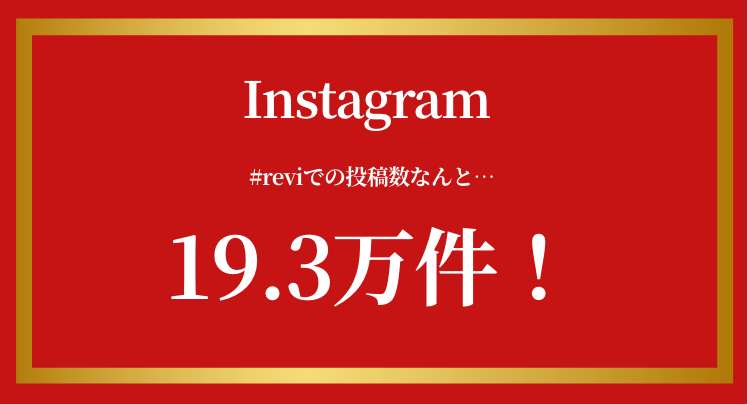
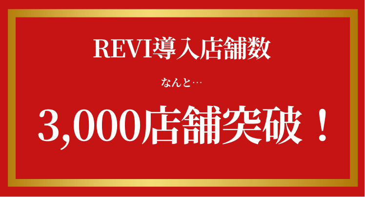
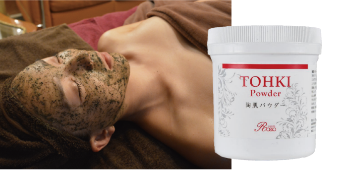

話題沸騰中のREVI
 一度使ったらやめられない！
REVI の人気の秘密
人を美しくする『ルヴィ』
その理由は最先端の医療の検知から誕生した、
再生因子細胞美容に秘訣があります。
人気の秘密
No,1
３つの希少な植物幹細胞成分配合
REVIは肌細胞の生まれ変わりを担う植物幹細胞が全ての化粧品に配合されています。 特に希少価値の高いリンゴ、ブドウ、アルガン幹細胞が入っていることによりターンオーバーを正常に保ち肌が新しく生まれ変わっていきます。
REVIは肌細胞の生まれ変わりを担う植物幹細胞が全ての化粧品に配合されています。 特に希少価値の高いリンゴ、ブドウ、アルガン幹細胞が入っていることによりターンオーバーを正常に保ち肌が新しく生まれ変わっていきます。
人気の秘密
No,2
300種類の酵素
REVI化粧品は300種類もの酵素を配合しているので、肌の汚れをしっかり落とし、殺菌作用、角質の乱れを分解し、清潔な状態にします。また、疲れた細胞や古い細胞を新しい細胞に再生し、元気な活力のある肌に甦らせます。
REVI化粧品は300種類もの酵素を配合しているので、肌の汚れをしっかり落とし、殺菌作用、角質の乱れを分解し、清潔な状態にします。また、疲れた細胞や古い細胞を新しい細胞に再生し、元気な活力のある肌に甦らせます。
人気の秘密
No,3
世界特許取得のCYSAY（再生）
「Cysay」とは、幹細胞を培養する過程において細胞培養液に放出され100種類以上の生理活性物質（タンパク）総称【不死化幹細胞培養上清 】のことです。
Cysay は100 種類以上もの生理物質によって、必要な部分失われた幹細胞を呼び寄せ、その部位を再生するとされています。
「Cysay」とは、幹細胞を培養する過程において細胞培養液に放出され100種類以上の生理活性物質（タンパク）総称【不死化幹細胞培養上清 】のことです。 Cysay は100 種類以上もの生理物質によって、必要な部分失われた幹細胞を呼び寄せ、その部位を再生するとされています。
REVI のハーブピーリング
陶肌トリートメントとは？

日本人の肌を想って開発した
特別なピーリング
日本人の肌は欧米人の肌より、薄くキメの細かい肌だと言われています。
白く、陶器のようにつるんとした肌は日本人特有の美しさがあります。
ただし、ケアをしていても肌自体に活力を持たせるケアが不足していると、代謝機能や保湿力、免疫力の低下で肌トラブルが起こります。
これを叶えるのがREVIの陶肌トリートメントです。
剥けない、痛くない、ダウンタイムなし
それでいて効果が高い
これまでの刺激的なケミカルピーリングとは違い、ソフトピーリングを通して無理なく自然に美しい肌へ導きます。
刺激が少ないのに本当に効果があるの？と不思議に思うかもしれませんが、REVIの陶肌トリートメントに使用する「陶肌パウダー」には、
だからこそ、痛みや剥けはなく、肌本来の力を引き出してくれるのです。
REVI 陶肌トリートメントの
圧倒的効果！
50代 女性 くすみ・たるみが気になる
たるみが気になる頬が、引き締まったハリのある頬に！
全体的にくすんでいた肌も白く透明感アップ！
40代 男性 マイナス10歳肌とはこのこと！
2年前の自身の写真と比較して驚愕。肌のたるみやシワが改善されて 確実に若返った肌に。肌が上がることで目元もぱっちりと大きく。
REVIのハーブピーリング
陶肌トリートメントの
嬉しい声が続々！
嬉しい声が続々！
長年悩んでいたシワとたるみが
目立たなくなり、若々しい印象に！
ほうれい線や目尻のシワが気になって、何を使ってもなかなか効果が感じられず、エステにでも行ってみようかなと考えていたところで、REVIの肌に優しい陶肌ピーリングを知ってこれなら負担なくできるかなと思い施術を受けました。終わって鏡を見た瞬間にまず頬の位置が上がっていて、気になっていたシワも目立たなくなっていました。即効性が高いのに肌に優しいREVIの陶肌ピーリングに今では夢中です♪
30代突入！ひどくなる乾燥と毛穴の
開きが驚くほど解消されました！
30代に突入し、20代の頃と肌の状態が違ってきていることに気がつき、何かケアをしなければ…と思っていたところに、友人からの勧めでREVIの陶肌トリートメントを受けてみました。施術中も全く痛みはなく、ハーブの香りに癒されました。 私の肌の状態に合わせてオプションも追加していただき、つるんとした毛穴レスの肌に生まれ変わりました！驚いたのは翌朝、洗顔をした際に乾燥を感じなかったこと。化粧ノリもとても良かったです！
ベースメイク厚塗りが欠かせなかった私が、今はすっぴんに自信あり！
昔から肌のくすみが気になっていて、ベースメイクをしっかりしないとなんとなく不健康な顔に見えてしまい、もう仕方がないと諦めていました。ケミカルピーリングの存在を知り、やってみたいと思う反面、痛みや肌が剥けるなどのダメージに抵抗があり、挑戦できずにいました。 そんな時、天然成分由来のREVIの陶肌ピーリングに出会い、ダメージなく、透明感のある明るい素肌になれました！ 今ではすっぴんでお出かけしちゃいます♪
よくあるご質問
-
Q1肌荒れがひどい場合も施術は受けられますか？
- REVIのトリートメントはアトピーの方にも施術可能です。
特に炎症がひどい箇所はご相談させていただきます。 - Q2店舗はどこにありますか？
- 群馬県富岡市・藤岡市にございます。
詳しい場所は こちらからご確認ください。 -
Q3本当に痛くないですか？
- 個人差はありますが激しい痛みを感じるという方はいません。
皮が剥けたり、ダウンタイムなどはまずありません。 -
Q4どのくらいの周期で通う必要がありますか？
- 肌改善を目的にされる場合は週に１回のペースで4回を1クールとしております。
-
Q5
陶肌トリートメントの他に何がありますか？
- REVIのホームケアの販売も行なっております。
ECサイトもご用意がありますのでぜひご確認ください。
陶肌トリートメントの
流れ
施術の所要時間は約1時間です。
1.カウンセリング
お客様のお肌の状態、体調などを詳しくカウンセリングいたします。

2.クレンジング
メイクやお肌の汚れを落とします。
3.洗顔
毛穴や皮脂の汚れをスッキリと落とします。
4.ゴマージュ
お肌の表面の角質を優しく取り除きます。。
5.陶肌トリートメント
専用ローションで陶肌パウダーを溶き、ゆっくりとマッサージしていきます。
6.クリームパック or Cysay
・クリームパック・・・乾燥肌・脂性肌別パックで、保湿や鎮静をしていきます。
・Cysay・・・再生因子配合のセラムでピーリング後の肌の再生、修復をサポートします。
7.美容ジェル
お肌のキメを整えて潤いを与えていきます。
8.仕上げクリーム
乾燥からお肌を守るクリームで仕上げていきます。